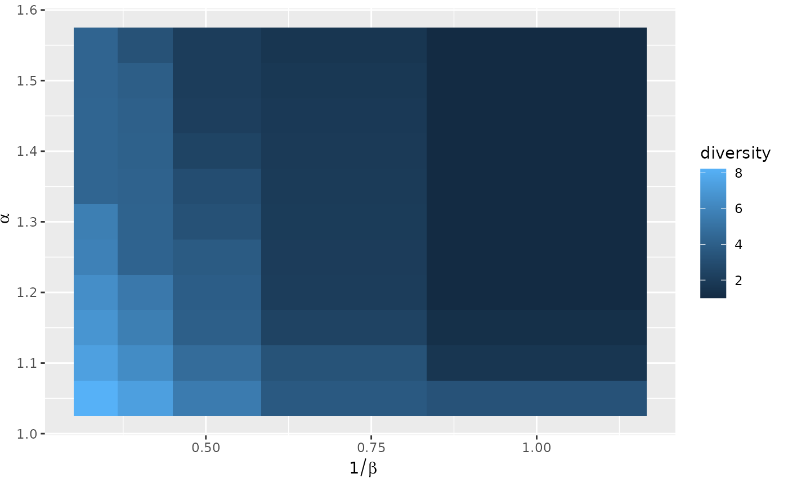
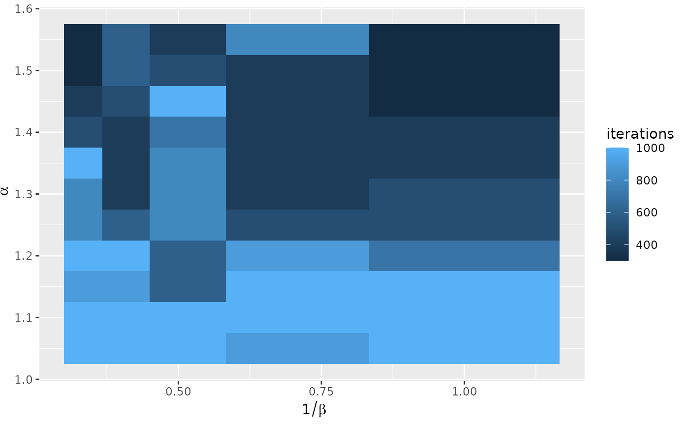
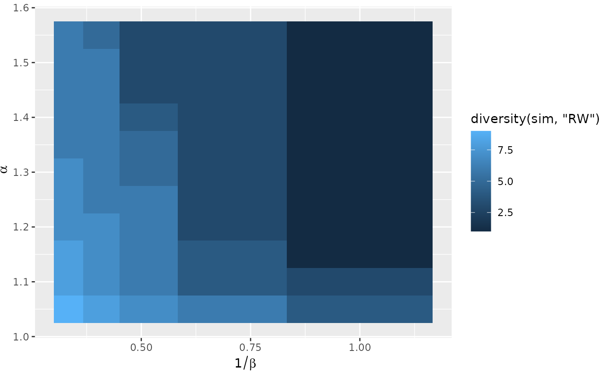
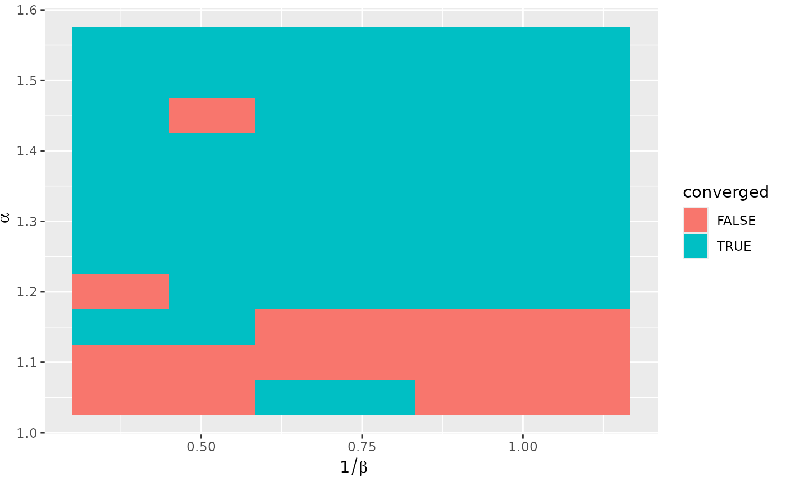
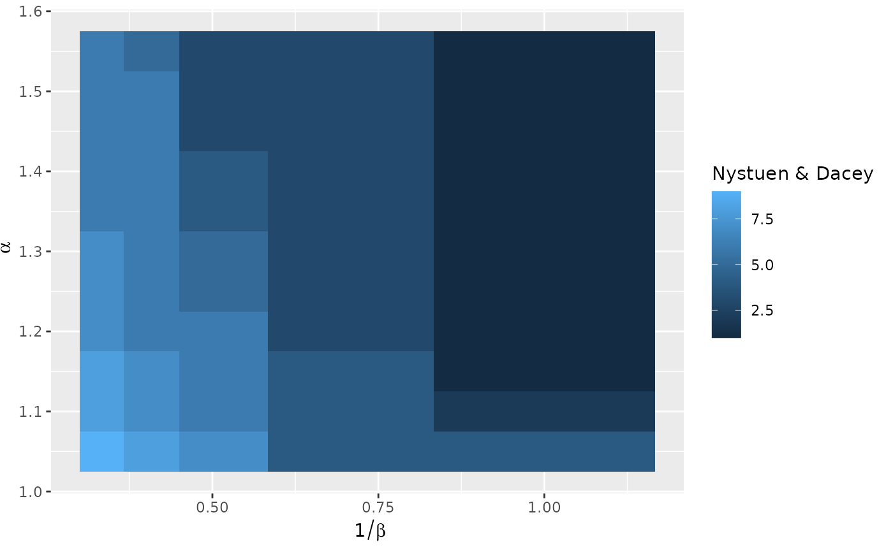
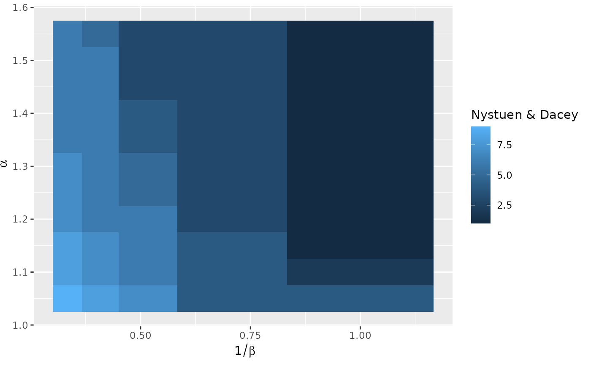

Create a complete ggplot for a spatial interaction models data frame
Source:R/sim_df_autoplot.R
autoplot.sim_df.RdThis function uses a tile plot from ggplot2 to display a single value for each of the parameter pairs used to produce the collection of spatial interaction models.
Usage
# S3 method for class 'sim_df'
autoplot(object, value, inverse = TRUE, ...)Details
The value to display is specified via an expression evaluated in the context
of the data frame. It defaults to the diversity as computed by diversity().
See the below for examples of use.
The horizontal axis is used by default for the cost scale parameter, that is
\(1/\beta\). This is in general easier to read than using the inverse cost
scale. The inverse parameter can be used to turn off this feature. The
vertical axis is used by default for the return to scale parameter.
Examples
positions <- matrix(rnorm(10 * 2), ncol = 2)
distances <- as.matrix(dist(positions))
production <- rep(1, 10)
attractiveness <- c(2, rep(1, 9))
all_flows <- grid_blvim(distances, production, seq(1.05, 1.55, by = 0.05),
seq(1, 3, by = 0.5),
attractiveness,
bipartite = FALSE,
epsilon = 0.1, iter_max = 1000
)
all_flows_df <- sim_df(all_flows)
## default display: Shannon diversity
ggplot2::autoplot(all_flows_df)

## iterations
ggplot2::autoplot(all_flows_df, iterations)

## we leverage non standard evaluation to compute a different diversity
ggplot2::autoplot(all_flows_df, diversity(sim, "RW"))

## or to refer to columns of the data frame, either default ones
ggplot2::autoplot(all_flows_df, converged)

ggplot2::autoplot(all_flows_df, iterations)
 ## or added ones
all_flows_df["Nystuen & Dacey"] <- diversity(all_flows_df$sim, "ND")
ggplot2::autoplot(all_flows_df, `Nystuen & Dacey`)

## or added ones
all_flows_df["Nystuen & Dacey"] <- diversity(all_flows_df$sim, "ND")
ggplot2::autoplot(all_flows_df, `Nystuen & Dacey`)
